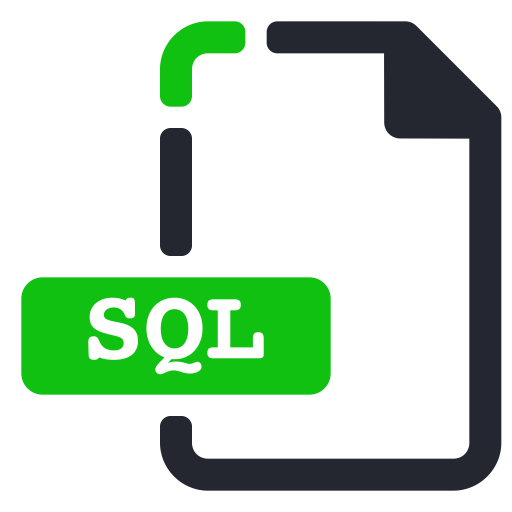
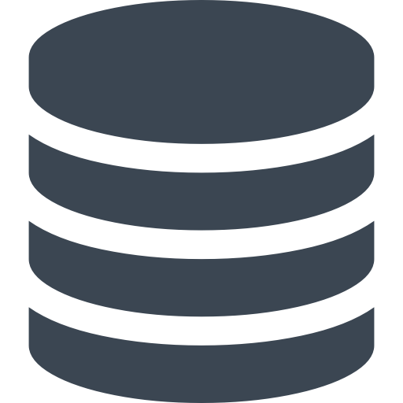
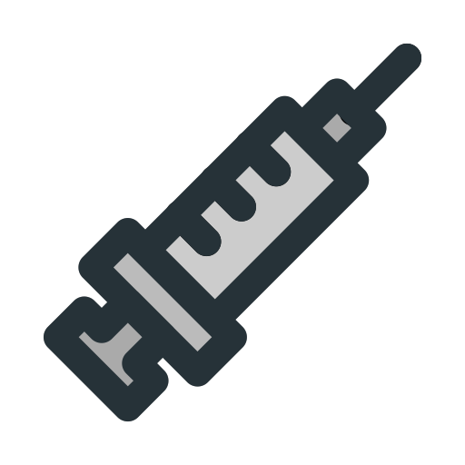

tema4-5a

¿Que es SQL?
SQL es un lenguaje de dominio específico utilizado en
programación, diseñado para
administrar, y recuperar información de sistemas de gestión de bases de datos relacionales.

¿Paraqué sirve SQL?
SQL no se usa solo para manipular datos, sino también para crear
y
modificar el diseño
de objetos de base de datos, como tablas. El elemento de SQL que se usa para crear y modificar objetos
de base de datos se denomina lenguaje de definición de datos (DDL).
 Tipos de ataques SQL
Tipos de ataques SQL

SQL Injection
nyección SQL es un método de infiltración de código intruso que
se
vale de una
vulnerabilidad informática presente en una aplicación en el nivel de validación de las entradas para
realizar operaciones sobre una base de datos.
 Ataque SQL injection
Ataque SQL injection
https://es.wikipedia.org/wiki/SQL
https://support.office.com/es-es/article/access-sql-conceptos-b%C3%A1sicos-vocabulario-y-sintaxis-444d0303-cde1-424e-9a74-e8dc3e460671